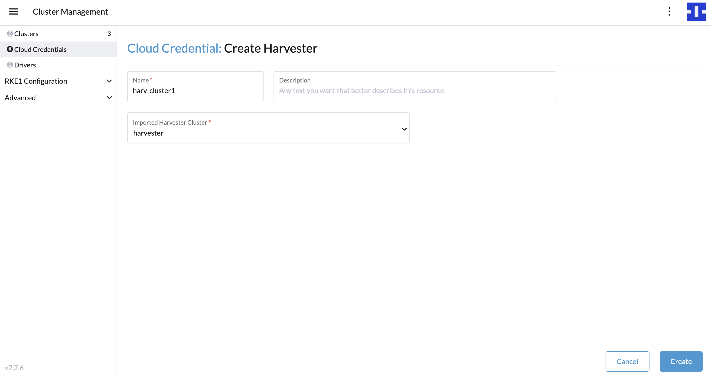
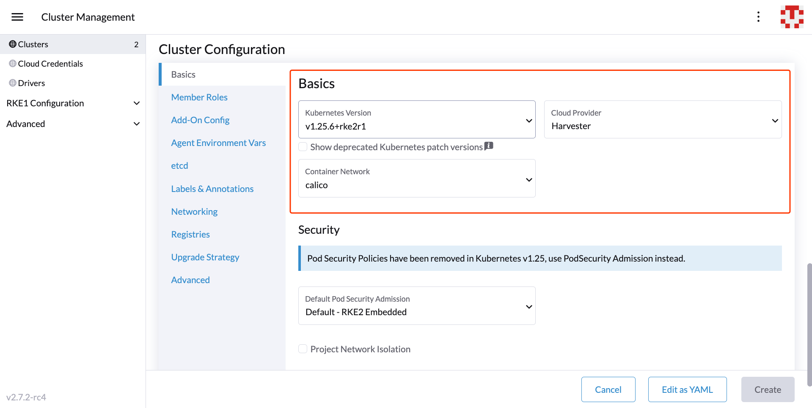
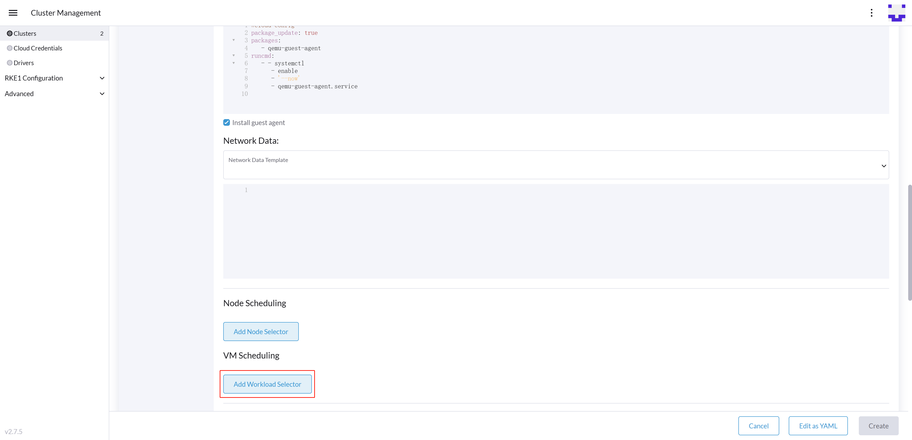

RKE2 Kubernetes クラスターの作成
SUSE® Rancher Prime: RKE2 Kubernetes クラスターを SUSE Virtualizationのクラスターの上に、ビルトインの Harvester Node Driver を使用してプロビジョニングできます。SUSE Rancher Prime

|
後方互換性のお知らせ
|
Harvester Cloud Provider バージョン v0.2.2 以上を使用している場合、既知の後方互換性の問題にご注意ください。 SUSE Virtualization バージョンが v1.2.0 未満で、新しい RKE2 バージョン (i.e., >= 詳細なサポートマトリックスについては、公式の ウェブサイト の Harvester CCM & CSI Driver with RKE2 Releases セクションを参照してください。 |
クラウド資格情報を作成する
-
☰ > クラスター管理 をクリックします。
-
クラウド資格情報 をクリックします。
-
［作成］をクリックします。
-
Harvester をクリックします。
-
クラウド資格情報名を入力してください
-
「インポートされた Harvester クラスター」を選択します。
-
［作成］をクリックします。

RKE2 Kubernetes クラスターを作成する
ユーザーは、RKE2 ノードドライバーを介して クラスター管理 ページから RKE2 Kubernetes クラスターを作成できます。
-
クラスター メニューを選択します。
-
［Create］ボタンをクリックします。
-
トグルスイッチを*RKE2/K3s*に切り替えます。
-
Harvester Node Driver を選択します。
-
クラウド資格情報 を選択します。
-
*クラスター名*を入力してください（必須）。
-
*ネームスペース*を入力してください（必須）。
-
*イメージ*を入力してください（必須）。
-
*ネットワーク名*を入力してください（必須）。
-
*SSHユーザー*を入力してください（必須）。
-
（オプション）VMの必要なパッケージをインストールするために、menu:詳細を表示[ユーザーデータ]を設定します。
#cloud-config packages: - iptablesCalicoおよびCanalネットワークは、ノードに`iptables`または`xtables-nft`パッケージがインストールされている必要があります。詳細については、RKE2ドキュメントの CanalとIP枯渇を参照してください。
-
［作成］をクリックします。



-
RKE2 v1.21.5+rke2r2以上は、ビルトインのHarvester Cloud ProviderおよびGuest CSIドライバー統合を提供します。
-
ハーベスターのノードドライバーは、インポートされたSUSE Virtualizationクラスターのみをサポートしています。
-
ノードアフィニティを追加します。
ハーベスターのノードドライバーは、ノードアフィニティルールを通じて特定のノードにマシンのグループをスケジュールすることをサポートしており、高可用性とより良いリソース利用を提供できます。
クラスター作成中に、マシンプールにノードアフィニティを追加できます：
-
Show Advanced`ボタンをクリックし、`Add Node Selector をクリックします。
をクリックします。 -
スケジューラがルールが満たされているときにのみマシンをスケジュールするようにするには、優先度を`Required`に設定してください。
-
ノードアフィニティルールを指定するには`Add Rule`をクリックしてください。例えば、トポロジースプレッド制約のユースケースでは、`region`および`zone`ラベルを次のように追加できます：
key: topology.kubernetes.io/region operator: in list values: us-east-1 --- key: topology.kubernetes.io/zone operator: in list values: us-east-1a
ワークロードアフィニティを追加する
ワークロードアフィニティルールを使用すると、これらのノード上で既に実行中のワークロード（VMおよびポッド）のラベルに基づいて、マシンがスケジュールできるノードを制約できます。
ワークロードアフィニティルールは、クラスター作成中にマシンプールに追加できます：
-
*詳細を表示*を選択し、*ワークロードセレクターを追加*を選択します。

-
タイプ、*アフィニティ*または*アンチアフィニティ*を選択します。
-
*優先度*を選択します。*推奨*はオプションのルールを意味し、*必須*は必須のルールを意味します。
-
ターゲットワークロードのためのネームスペースを選択します。
-
ワークロードアフィニティルールを指定するには*ルールを追加*を選択します。
-
*トポロジーキー*を設定して、SUSE Virtualizationホストを異なるトポロジーに分けるラベルキーを指定します。
詳細については、 Kubernetes Podアフィニティおよびアンチアフィニティのドキュメントを参照してください。
RKE2 Kubernetes クラスターを更新する
RKE2マシンプールの下に強調表示されたフィールドは、SUSE Virtualization VM設定を表します。これらのフィールドに対する変更は、ノードの再プロビジョニングを引き起こします。

エアギャップ環境でのHarvester RKE2ノードドライバーの使用
RKE2プロビジョニングは、仮想マシンの IP を取得するために`qemu-guest-agent`パッケージに依存しています。
CalicoおよびCanalは、ノードに`iptables`または`xtables-nft`パッケージがインストールされていることを要求します。
ただし、エアギャップ環境ではパッケージをインストールすることが困難な場合があります。
インストールの制約に対処するためのオプションは次のとおりです：
-
オプション1。必要なパッケージ（例：
iptables、qemu-guest-agent）が事前に設定されたVMイメージを使用します。 -
オプション2。VMがHTTP(S)プロキシを介して必要なパッケージをインストールできるようにするには、詳細を表示 > *ユーザーデータ*に移動します。
SUSE Virtualizationノードテンプレートの例のユーザーデータ：
#cloud-config apt: http_proxy: http://192.168.0.1:3128 https_proxy: http://192.168.0.1:3128